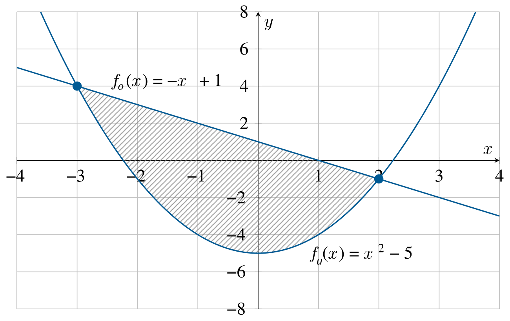
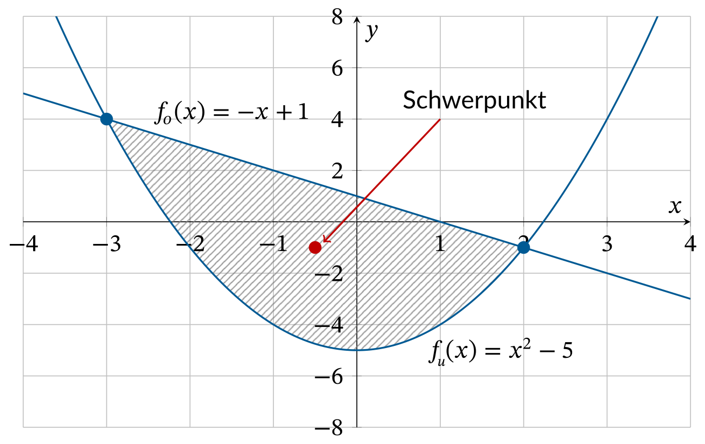

9.4 Anwendung: Schwerpunktberechnung#
Häufig wird das Doppelintegral dazu benutzt, den Schwerpunkt einer ebenen homogenen Platte zu berechnen.
Lernziele#
Lernziel
Sie können mit dem Doppelintegral den Schwerpunkt \((x_S, y_S)\) einer homogenen ebenen Fläche mit den Formeln
berechnen.
Schwerpunktberechnung#
Für den Schwerpunkt einer ebenen homogenen Fläche gilt für die x-Koordinate die folgende Formel
und für die y-Koordinate des Schwerpunkts die Formel
Beispiel Schwerpunktberechnung#
Wir bleiben bei dem Beispiel der vorhergehenden Kapitel mit den beiden Funktionen
und
Aus dem letzten Kapitel wissen wir bereits, dass sich die beiden Funktionen in den Punkten \((-3,4)\) und \((2,-1)\) schneiden.
{kind=link}

Fig. 22 Gesucht ist der Schwerpunkt der schraffierten Fläche \(A\), die durch die Gerade \(f_o(x)=-x+1\) und die Parabel \(f_u(x)=x^2-5\) umrandet wird.#
Gesucht ist diesmal der Schwerpunkt dieser ebenen homogenen Fläche.
1. Schritt: Berechnung Flächeninhalt \(A\)
Zuerst wird der Flächeninhalt \(A\) mit dem Doppelintegral
berechnet. Aus dem letzten Kapitel wissen wir bereits, dass \(A = \frac{125}{6} \approx 20.8333\).
2. Schritt: Berechnung x-Schwerpunkt \(x_S\)
Nun berechnen wir den Schwerpunkt der Fläche in x-Richtung. Dazu wird die Formel
verwendet. Zuerst berechnen wir das innere Integral \(I(x)\), indem wir nach \(y\) integrieren:
\begin{align*} I(x)&= \int_{y=f_u(x)}^{y=f_o(x)} x , dy = \ &= \int_{y=x^2-5}^{y=-x+1} x , dy = \ &= \big[ xy \big]_{y=x^2-5}^{y=-x+1} = \ &= x\cdot(-x+1) - x\cdot(x^2-5) = \ &= -x^3-x^2+6x. \end{align*}
Dann wird das innere Integral in das äußere Integral eingesetzt und nach \(x\) integriert:
\begin{align*} \int_{x=-3}^{x=2} -x^3-x^2+6x , dx &= \left[-\frac{1}{4}x^4-\frac{1}{3}x^3+3x^2\right]_{x=-3}^{x=2} = \ &= -\frac{125}{12} \approx -10.417.\ \end{align*}
Nun kann alles in die Formel eingesetzt werden:
3. Schritt: Berechnung y-Schwerpunkt \(y_S\)
Als letztes wird der Schwerpunkt der Fläche in y-Richtung berechnet. Dazu wird die Formel
verwendet. Zunächst berechnen wir wieder einmal nur das innere Integral durch Integration nach \(y\):
\begin{align*} I(x) &= \int_{y=x^2-5}^{-x+1} y , dy = \ &= \big[\frac{1}{2}y^2 \big]{y=x^2-5}^{-x+1} = \ &= \frac{1}{2}\left(-x+1\right)^2 - \frac{1}{2}\left( x^2-5\right)^2 = \ &= -\frac{1}{2}x^4+\frac{11}{2}x^2-x-12. \end{align*}
Eingesetzt in das äußere Integral erhalten wir
\begin{align*} \int_{x=-3}^{x=2} -\frac{1}{2}x^4+\frac{11}{2}x^2-x-12 , dx &= \left[-\frac{1}{10}x^5+\frac{11}{6}x^3-\frac{1}{2}x^2-12x \right]_{x=-3}^{x=2} = \ &= -\frac{125}{6} \approx -20.8333. \end{align*}
Nun noch alles in die ursprüngliche Formel einsetzen und wir erhalten für den Schwerpunkt \(y_S\) in y-Richtung:
Damit ist der Schwerpunkt der Fläche \((-0.5, -1)\).
{kind=link}

Fig. 23 Schwerpunkt der schraffierten Fläche \(A\), die durch die Gerade \(f_o(x)=-x+1\) und die Parabel \(f_u(x)=x^2-5\) umrandet wird.#